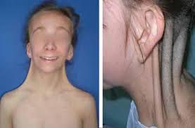

TU WEB SCIENCE DE CONFIANZA
"Ciencias Naturales"
| Comparación | Sindrome Down | Sindrome Turner | Sindrome Klinefelter |
| referencias sobre los temas |  | ||
| definición | Es una alteración genética, la cual consiste en que la persona que lo padece tiene tres cromosomas en el par 21 en lugar de los dos que existen normalmente. | Es una afección genética que solo afecta a las niñas. Esta consiste en que la chica que lo padece tiene un cromosoma sexual X menos (los cromosomas sexuales definen el género y el sexo de una persona). | Es la alteración genética que le afecta solo a los niños. El niño que lo padece puede llegar a tener por lo menos un cromosoma sexual X extra |
| Causas | Aunque la causa exacta se desconoce, algunos factores que pueden afectar son: la edad avanzada de la madre o que los padres sean portadores de la translocación genética. | Este síndrome no es causado por algo que los padres de la chica hayan hecho o dejado de hacer, sino que se trata de un error aleatorio en la división celular que ocurre cuando se están formando las células reproductoras de los padres. | Ocurre como consecuencia de un error aleatorio que hace que el varón nazca con el o los cromosoma/s extra/s. Esta no es una afección hereditaria. |
| Caracteristicas | Algunas de las características son: • Cara aplanada, especialmente en el puente nasal. • Ojos en forma de almendra. • Cuello corto. • Orejas pequeñas. • La lengua tiende a salirse de su boca. • Manos y pies pequeños. | Las niñas que sufren de este síndrome tienen diferentes características físicas como por ejemplo: • Tienen una baja estatura • Cuello corto con “pliegues” que van desde la parte superior de los hombros hasta los lados del cuello • Línea del cabello bajo en la espalda • Baja ubicación de las orejas • Manos y pies inflamados • Un aspecto infantil | Algunas de las características físicas de los niños con el síndrome de Klinefelter son: • Piernas largas y torso corto • Caderas anchas • Poca masa muscular • Bajas cantidades de bello facial y corporal • Testículos y pene pequeño • Mamas desarrolladas • Huesos débiles • Hombros estrechos |
| Padecimientos | Algunas de las complicaciones de salud que puede traer el síndrome de Down son: • Cardiopatías congénitas • Patologías gastrointestinales • Trastornos del sistema inmune • Apnea del sueño • Obesidad • Problemas en la columna vertebral • Enfermedad de Alzheimer en la edad adulta • Problemas de audición y visión | Algunas de las complicaciones de salud que pueden llegar a tener las niñas que padecen el síndrome de Turner son: • Deformaciones esqueléticas • Esterilidad de por vida • Problemas renales • Patologías cardíacas • Hipertensión arterial • Diabetes • Cataratas • Osteoporosis • Problemas en las tiroides | Los niños con el síndrome de Klinefelter pueden llegar a tener complicaciones tales como: • Enfermedades pulmonares • Osteoporosis • Proporción corporal anormal • Esterilidad de por vida • Estatura alta • Cáncer de mama • Hipertensión • Hiperlipidemia • Trastornos autoinmunitarios como lupus y artritis reumatoide |
| Tratamientos | No existe un tratamiento estándar y único para el síndrome de Down. Estos dependen de las necesidades físicas e intelectuales de cada persona, así como de sus destrezas y limitaciones personales. | No existe cura para el síndrome, pero si hay tratamientos para sus síntomas. Por ejemplo, la hormona del crecimiento suele ser usada para ayudar a las niñas alcancen estaturas cercanas al promedio. La terapia de sustitución hormonal puede estimular el desarrollo sexual. | para el síndrome en sí, no hay un tratamiento, pero existen diferentes tratamientos para algunos síntomas, por ejemplo el tratamiento para la baja testosterona, este ayuda a mejorar la masa muscular, hace mas grave la voz, promueve el crecimiento de vello facial y corporal, fortalece los huesos. |